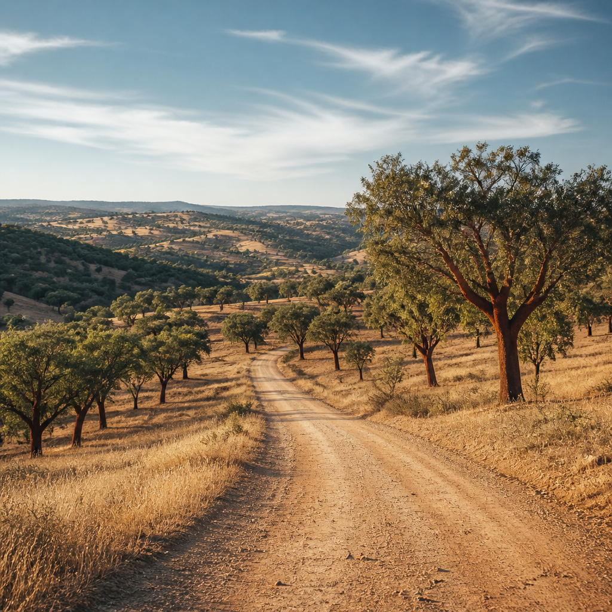
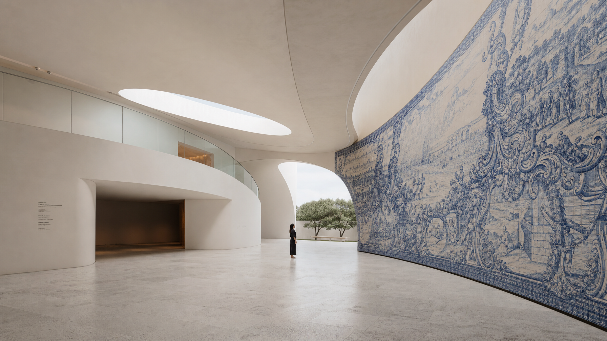

Dispatches
from Portugal.
On wine, light, cities, and how to move through them. Written from Lisbon, occasionally from the road.
Why Lisbon belongs to an earlier hour.
The city doesn't open. It transforms. Between 5am and 8am, before anyone else arrives, there's a version of Lisbon that exists only for the people who are already there.
March 2025
The village baker who is also the sommelier.
In Monsaraz, there is a man who bakes bread at 4am and opens his cellar to guests at noon. He has never advertised either. You find him by knowing someone who found him.
February 2025
Comporta before the season, and after it.
September is not the beginning of something in Comporta. It's what's left when everything performative has gone. The bone-white dunes, the quiet, the particular flatness of the Atlantic in autumn.
January 2025
On azulejo: what the tiles are actually saying.
Portugal's tiles are not decoration. They are a record — of maritime routes, of Islamic geometry, of a specific anxiety about what happens when the sun gets in. A workshop visit with the person who still cares.
December 2024The vinho verde they don't export — and why they don't.
Most vinho verde is made to travel. Some of it is made to be drunk on the quinta, at the table where it was bottled, by people who already know they won't be going anywhere after this glass.
November 2024The Lisbon aesthetic is not what you think it is.
The visual language being built in converted river warehouses and Mouraria ateliers right now has almost nothing to do with the pastel-tiled version that fills certain mood boards. It's harder, and stranger, and considerably more interesting.
October 2024Stay in the loop
Occasional dispatches. No noise.
A few times a year. When something is worth saying.